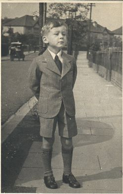

|
We have all heard the expression “I could write a book about it”
Well, I must have said it a dozen times at least. The problem is
where to begin. As with most things, at the beginning, is as good an
answer as you could expect to a stupid question like that. For my
sins, I have led a charmed life over the past seventy one years.
There are many instances where one of my father’s favourite
utterances, better born lucky than rich, has been proven to be
absolutely true. I consider myself to have been very lucky in
everything I have undertaken. Those who have known me will testify to
the fact I do not plan things very well, and tend to bluff my way
through when I get out of my depth. When I undertook to write
computer programs in the early days of PCs I seldom put pencil to
paper, just sat at the computer and typed away night and day until a
program emerged. Once that was completed and the weaknesses were
highlighted, then a re-write was inevitable. I still do everything
the hard way. The front and back page of this book have been designed
by Daniel, my right hand computer graphics whiz kid. All that remains
to be done is for the trivia to be recounted with which to fill this
proposed masterpiece. 
This is me at a tender age outside 115 Pickhurst Rise, probably aged about 5. Notice the horse drawn baker's cart in the background. At first I attended HAWSE DOWN Infant's School, with Miss Robinson being the Head teacher. No sooner had I started there in 1939 than war broke out, and I can remember whilst my dad was at work on a Sunday, Mr Hayward from 113 coming over when the sirens sounded for a practice, and making us all get under the dining room table. We never hid under there again but dad moved the player piano adjacent to the main wall of the house and we slept on a mattress beside the piano occasionally if the bombing got heavy. Failing that, we stayed in our own beds, sometimes watching the 'show' from the back bedroom window. The searchlights towards London were constantly sweeping the skies, and the ack ack flew all over the shop hitting very little! When the bombing started on a regular basis the school was closed and we had half day lessons for about six of us at a time in one or another's homes, when a teacher would call. That didn't last long and we eventually went back to school which now had air raid shelters (smelly places) and we all had our gas masks. Towards the end of the war I used to 'help' the milkman all day on a Saturday when he used to collect the money. Our horse was named 'Henry' and was a gorgeous chestnut coloured animal who knew his own way round the round. I reckon if he could have picked the bottles up he could have done the job on his own! I remember we delivered all sizes of milk, quarts, pints (mostly), ½ pints, eggs cream and butter too. First thing in the morning I would go to the far end of West Wickham high street to the dairy where Henry was stabled. His cart would already be loaded with the quantities for delivery and I would fetch him from his stable to the cart, turn him round backwards, (difficult to do) and back him between the shafts. Then give him his nosebag and while he was tucking in, throw the harnesses over his back and lower the shafts and buckle him all up. A lovely farmyardy smell I recall. That took a little while, then by seven 'o clock we would be on our way. The cart would be very heavy to start with. There was no need to steer him as he knew his way. On the downhill parts the milkman would apply the brakes a little to save the cart pushing the horse faster than he could run!. Our round started at the bottom of Pickhurst Rise, and there were about 400 houses in that street. We would stop for lunch at the top in the Pickhurst Hotel. The horse would have his nosebag, the milkman a pint and a sandwich, I'd have an orange juice. Then we would carry on as far as The Avenue, The Chase and finally Goodhart way. We would be finished with an empty cart in the early afternoon. The milkman would flick the reigns and let me hold them. The horse knew his own way back to the stables and would clip clop happily all the way home pulling a much lightened cart. |